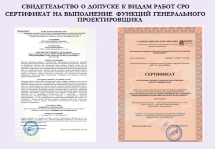

Преимущества
Комплексное
решениеВысокое качество
проектных решенийДоступная стоимость
проектирования
О проектном институте
ОАО «ЦИТП градостроительства им. Я. В. Косицкого» – крупный проектный институт, обладающий многолетним опытом проектирования объектов различного типа. В процессе работы над большим количеством сложных и уникальных зданий и сооружений в нашей проектной организации сформировалась своя школа проектирования и традиции подготовки специалистов. Главные принципы воспитания кадров – высокий уровень ответственности, согласованность действий, поиск нестандартных подходов к решению поставленных задач.
Основные направления проектного института
-
Разработка документации территориального планирования: Проекта
планировки территории линейного объекта;
Проекта планировки и межевания территории земельного участка; -
Проектирование жилых и общественных зданий, вкл. проектирование крупных объектов градостроительства (кварталов, микрорайонов, районов)
совместно с инфраструктурой.
Проектирование высотных зданий; -
Комплексное промышленное проектирование:
Проектирование заводов и предприятий;
Проектирование промышленных инженерных сетей и сооружений;
Технологическое проектирование производств; -
Разработка и согласование специальных технических условий (СТУ), вкл.:
эффективное согласование в МЧС и Минстрой РФ;
Наши лицензии
Политика проектного института
Политика проектного института строится на долгосрочной совместной работе с партнерами и индивидуальном подходе к каждому Заказчику. Мы приглашаем компании к сотрудничеству для комплексного решения вопросов подготовки и согласования проектной документации для строительства. ОАО «ЦИТП градостроительства им. Я.В. Косицкого» зарекомендовал себя как надежная проектная организация и высококвалифицированный генеральный проектировщик, открытый к любым творческим и взаимовыгодным контактам. Мы уверены, что наша совместная работа будет успешной и плодотворной.
Выбрать категорию
-
Разработка документации
по планировани территории -
Проектирование жилых
и общественых зданий -
Промышленное
проектирование -
Проектирование
инженерных сетей
Заполнение формы на расчет документации
Оставьте заявку на расчет стоимости разработки проектной документацииРежим работы: будние дни с 10:00 до 18:30